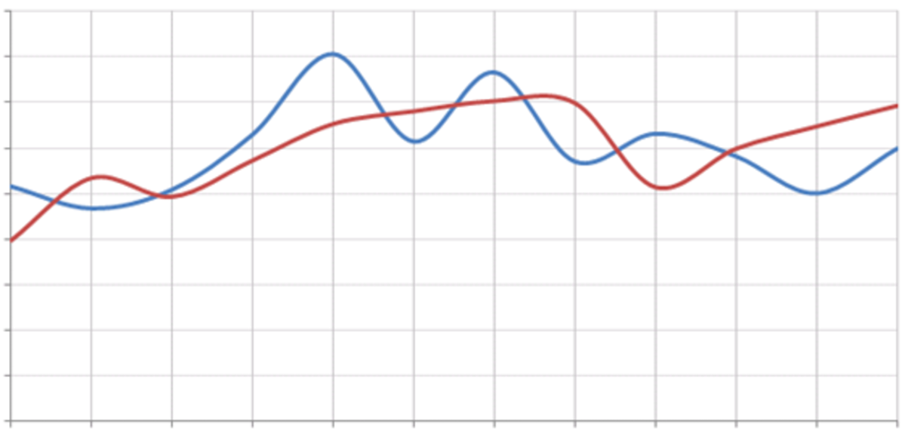

<mat-toolbar color="primary">
  <app-toolbar/>

</mat-toolbar>

<div class="breadcrumb">
  <a routerLink="/inicio">{{ 'breadcrumb.inicio' | translate }}</a> &gt;
  <a routerLink="/perfiles-tueste">{{ 'breadcrumb.perfilesTueste' | translate }}</a> &gt;
  {{ 'breadcrumb.comparacionTuestes' | translate }}
</div>

<div class="comparison-container">
  <div class="selectors">
    <div *ngFor="let selector of roastSelectors; let i = index" class="tueste-block">
      <div class="tueste-label">
        {{ 'comparison.tuesteLabel' | translate:{ index: i + 1 } }}
      </div>
      <select [(ngModel)]="roastSelectors[i]" name="roast-{{i}}">
        <option *ngFor="let profile of profiles" [value]="profile.id">
          {{ profile.name }}
        </option>
      </select>
    </div>

    <button
      class="add-button"
      (click)="addSelector()"
      [disabled]="roastSelectors.length >= 4"
      [attr.aria-label]="'comparison.agregarTueste' | translate"
    >
      <i class="material-icons">add</i>
    </button>
  </div>

  <div class="image-placeholder">
    
  </div>
</div>

